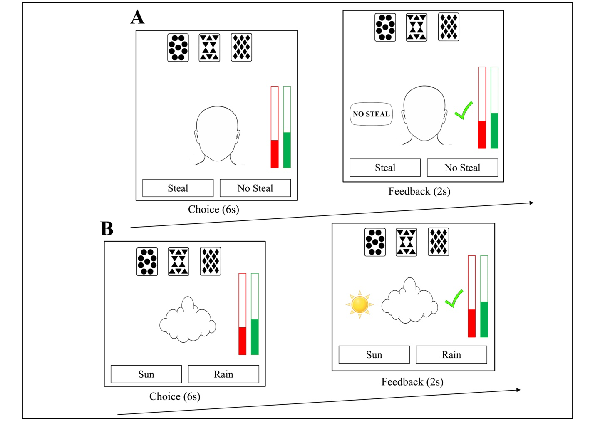

Stereotypes Disrupt Probabilistic Category Learning
Published in the Journal of Experimental Psychology: General CodeResearch Question
Racial stereotypes exert pernicious effects on decision-making and behavior, yet little is known about how stereotypes disrupt people’s ability to learn new associations. We interrogate a fundamental question about the boundary conditions of probabilistic learning by examining whether and how new learning is influenced by pre-existing associations
Competing Hypotheses
- Stereotypes may exert ‘first-order’ effects that disrupt learning on a trial-by-trial basis due to stereotype application or inhibition
- Stereotypes may also disrupt learning via ‘second-order’ effects due to taxed cognitive functioning
Method
Participants
Participants (N = 696 across 3 studies) were recruited from the University of California SONA pool. The sample had a mean age of 20.01, SD = 3.32 (63% self-identified female, and 37% self-identified male) and was 43% Asian, 28% Latino, 11% White, 8% Other, and 6% Black.
Personality Measures
- Internal Motivation to Respond Without Prejudice (Omega = .85)
- External Motivation to Respond Without Prejudice (Omega = .79)
- Social Dominance Orientation (Omega = .81)
Procedure
Schematic of the learning task in the Crime Face (A) and Weather Cloud (B) conditions. Participants learned the probabilities of the card patterns by selecting their choice and receiving feedback as to if they were correct or incorrect (right side of stimuli) as well as what the actual outcome was on that trial (left side of stimuli).
Building interactive paradigm using JavaScript
Try the paradigm Here!
Cover Story Display
function next_narrative() {
$("#narrative_0_text").hide();
$("#next_0").hide();
document.getElementById("narrative_1_text").style.display = "table";
$("#narrative_1_text").fadeIn("slow");
$("#next_1").show();
}Card Pattern Display
function generateTestSequence() { // generate the 200 trials
for (var i = 0; i < patterns.length; i++) {
for (var j = 0; j < patterns[i].tsRounded; j++) {
var currentPattern = new Pattern(null, null, null, null, null);
currentPattern = jQuery.extend(true, {}, patterns[i]);
currentPattern.willSteal = "True";
nonRandomizedPatterns.push(currentPattern); //pushing instance of the current pattern to the nonRandomizedPatterns array
}
for (var k = 0; k < patterns[i].nTSRounded; k++) { //adding patterns with positive response criteria (they will not steal)
var currentPatternFalse = new Pattern(null, null, null, null, null);
currentPatternFalse = jQuery.extend(true, {}, patterns[i]);
currentPatternFalse.willSteal = "False";
nonRandomizedPatterns.push(currentPatternFalse);//pushing instance of the current pattern to the nonRandomizedPatterns array
}
}
}Practice Trials
function start_demo() {
demo = true;
setUp();
display_start();
document.getElementById("main_container").style.marginTop = "1%";
next_pattern_demo();
timeIntID = setInterval("next_pattern_timout()", 6000);
}Results
Growth Modeling
To examine differences in learning across conditions, we estimated a logistic mixed model regressing accuracy onto a dummy coded factor for condition, as well as a continuous variable for time.
Participants exhibited learning disruptions in the social compared to nonsocial learning context, despite repeated instructions that the social and non-social stimuli were unrelated to the outcome (Studies 1-2)


Discussion
We demonstrate that despite financial incentives for accuracy, social motivations internal to the individual bias information processing towards desired conclusions. Partisans required overall less and weaker evidence when correctly categorizing the ingroup as more honest compared to the outgroup, and were more accurate on trials when the ingroup candidate was more honest, compared to the outgroup. DDMs revealed that partisan biases jointly arise as a function of two distinct mechanisms. First, pre-existing preferences for believing the ingroup candidate was more honest prepared partisans to conclude that the ingroup was more honest, and therefore they needed less evidence to arrive at this conclusion (i.e., biased starting point). Second, partisans were more precise in accumulating evidence that favored the ingroup candidate compared to the outgroup, resulting in differential weighting of evidence that favored the ingroup (i.e., biased drift rate).